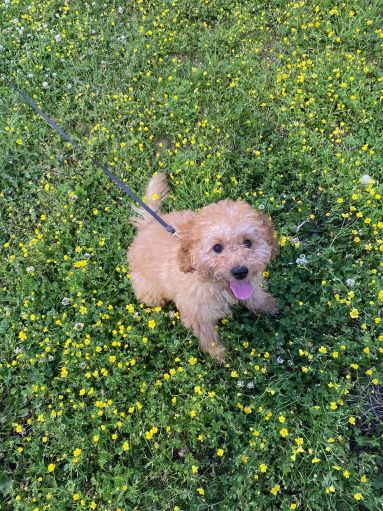

Zhongjie (Jack) Sun
About Me
Hi everyone! I’m Jack. I am currently in my third year of the Information Technology and Management (ITM) program. My academic journey is driven by my fascination with the "invisible" side of internet where security are often not taken seriously by daily consumers. I believe that security is frequently an afterthought in modern development, and I want to be part of the change that shifts security into more businesses.
My ultimate goal is to move into the Cybersecurity field, with a long-term plan to earn a Master’s in Cyber Forensics. I enjoy the challenge of finding flaws in internet engineering and developing innovative ways to improve system integrity.
Fitness and Health
Aside from academic studies, a big part of my time are dedicated to Bodybuilding.
I also spend a lot of time in the kitchen. I enjoy finding recipes that benefits my hard works in the gym and support my nutritional goals. For me, it is all about consistency.
Outside the Classroom
When I am not studying or at the gym, I spending my free time on my personal interests:
- Guitar and Music: Although I'm only a beginner, debugging code or hitting a specific lift in the gym is just like playing guitar. It is a skill that requires muscle memory and consistency. I enjoy the process of breaking down songs into manageable parts and practicing them until I am fluid with it.
- Competitive Gaming: I enjoy fast-paced, competitive games that require quick thinking and strategy. I like the high skill ceiling and the strategic depth these game require. The need for quick thinking and rapid decision-making under pressure gets my adrenaline going and ironically makes me less stress from the real world.
-
Dog Training: I am a massive dog lover and spend a lot of time training my dog, Coffee. I find that
the process of teaching new skills to a pet requires a level of patience and clear, non-verbal communication
that I find incredibly rewarding. It is a great way to step away from the digital world and connect with nature.
Here is a photo of my dog, Coffee.
